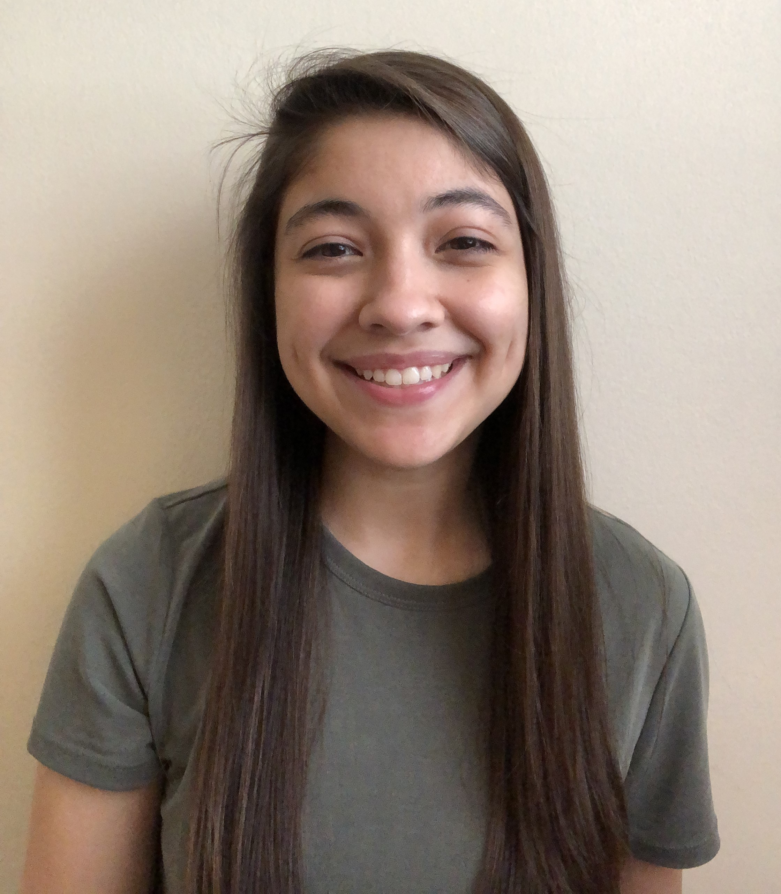

Elisa Longoria Designs
About Me
After studying Music Therapy at Appalachian State University, I decided to expand my knowledge of graphic and web design at Wake Technical University. I have designed logos, social media posts, posters, and more utilizing Adobe Suite and have learned HTML and CSS for web development and web design.
Work Experience
Most of my experience is in music education, primarily teaching percussion and viola.
Lead Front Ensemble Instructor
Enloe Magnet High School
May 2018 - Present
Independently planned, lead, and directed rehearsals for the marching band and indoor percussion season for a section of 11-14 students. Prepared the ensemble for band camp, performing maintenance of instruments and equipment. Taught music fundamentals and percussion technique.
Magnet Middle School Percussion Ensemble Director
Enloe Magnet High School
February 2024 - April 2024
Conducted an ensemble of 8 percussionists from 4 different middle schools in Raleigh. Taught the basics of percussion technique and other music fundamentals. Independently lead their showcase concert.
Music Theory Teacher and Camp Counselor
Lamar Stringfield Summer Music Camp
July 2023
Assisted with rehearsals and lead daily viola sectionals. Responsible for lesson planning and implementing music theory classes every day. Assisted with daily camp activities including lunch, snack, and after camp care.
Education
Appalachian State University
Music Therapy, August 2018 - December 2022
Recieved the Musical Excellence Scholarship. Consistently made the Dean's or Chancellor's list every semester.
Wake Technical Community College
Graphic and Web Design, January 2023 - present
Completed a Certificate of Graphic Design.
East Carolina University
Psychology, June 2024 - present